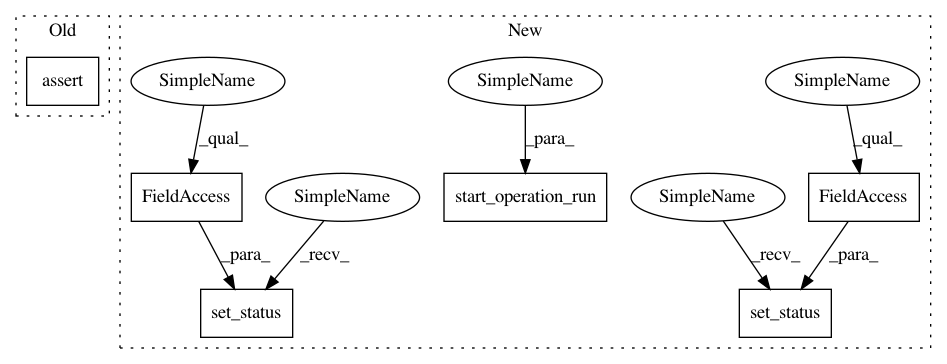

819e822c8acb54a671653fa552e1f130ac92efc4,tests/test_pipelines/test_models.py,TestOperationRunModel,test_running_operation_run_sets_pipeline_run_to_running,#TestOperationRunModel#,242
Before Change
def test_running_operation_run_sets_pipeline_run_to_running(self):
operation_run = OperationRunFactory()
assert operation_run.last_status == OperationStatuses.CREATED
assert operation_run.statuses.count() == 1
pipeline_run = operation_run.pipeline_run
assert pipeline_run.last_status == PipelineLifeCycle.CREATED
assert pipeline_run.statuses.count() == 1
After Change
def test_running_operation_run_sets_pipeline_run_to_running(self):
operation_run = OperationRunFactory()
start_operation_run(operation_run)
operation_run.refresh_from_db()
assert operation_run.last_status == OperationStatuses.CREATED
pipeline_run = operation_run.pipeline_run
assert pipeline_run.last_status == PipelineLifeCycle.CREATED
assert pipeline_run.statuses.count() == 1
// Create another operation run for this pipeline_run
operation_run2 = OperationRunFactory(pipeline_run=pipeline_run)
start_operation_run(operation_run2)
operation_run2.refresh_from_db()
operation_run.set_status(OperationStatuses.SCHEDULED)
pipeline_run.refresh_from_db()
operation_run.refresh_from_db()
assert operation_run.last_status == OperationStatuses.SCHEDULED
assert pipeline_run.last_status == PipelineLifeCycle.SCHEDULED
assert pipeline_run.statuses.count() == 2
operation_run.set_status(OperationStatuses.RUNNING)
pipeline_run.refresh_from_db()
operation_run.refresh_from_db()
assert operation_run.last_status == OperationStatuses.RUNNING
assert pipeline_run.last_status == PipelineLifeCycle.RUNNING
In pattern: SUPERPATTERN
Frequency: 3
Non-data size: 6
Instances
Project Name: polyaxon/polyaxon
Commit Name: 819e822c8acb54a671653fa552e1f130ac92efc4
Time: 2019-05-16
Author: mouradmourafiq@gmail.com
File Name: tests/test_pipelines/test_models.py
Class Name: TestOperationRunModel
Method Name: test_running_operation_run_sets_pipeline_run_to_running
Project Name: polyaxon/polyaxon
Commit Name: 819e822c8acb54a671653fa552e1f130ac92efc4
Time: 2019-05-16
Author: mouradmourafiq@gmail.com
File Name: tests/test_pipelines/test_models.py
Class Name: TestOperationRunModel
Method Name: test_running_operation_run_sets_pipeline_run_to_running
Project Name: polyaxon/polyaxon
Commit Name: 819e822c8acb54a671653fa552e1f130ac92efc4
Time: 2019-05-16
Author: mouradmourafiq@gmail.com
File Name: tests/test_pipelines/test_models.py
Class Name: TestOperationRunModel
Method Name: test_failed_operation_runs_sets_pipeline_run_to_finished
Project Name: polyaxon/polyaxon
Commit Name: 819e822c8acb54a671653fa552e1f130ac92efc4
Time: 2019-05-16
Author: mouradmourafiq@gmail.com
File Name: tests/test_pipelines/test_models.py
Class Name: TestOperationRunModel
Method Name: test_succeeded_operation_runs_sets_pipeline_run_to_finished